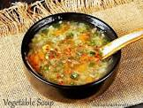

Recipe for Soup with ingrediants and steps

Ingredients
- Butter
- Vegetables
- Seasonings
- Ham
- Stock
Steps:
- Cook the garlic, onions, and celery in butter.
- Add the split peas, ham, and bay leaf. Stir in the stock and water.
- Cook until the peas are tender and the soup is thick. Season with salt and pepper.